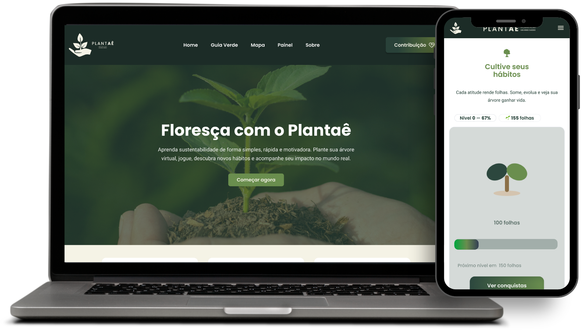
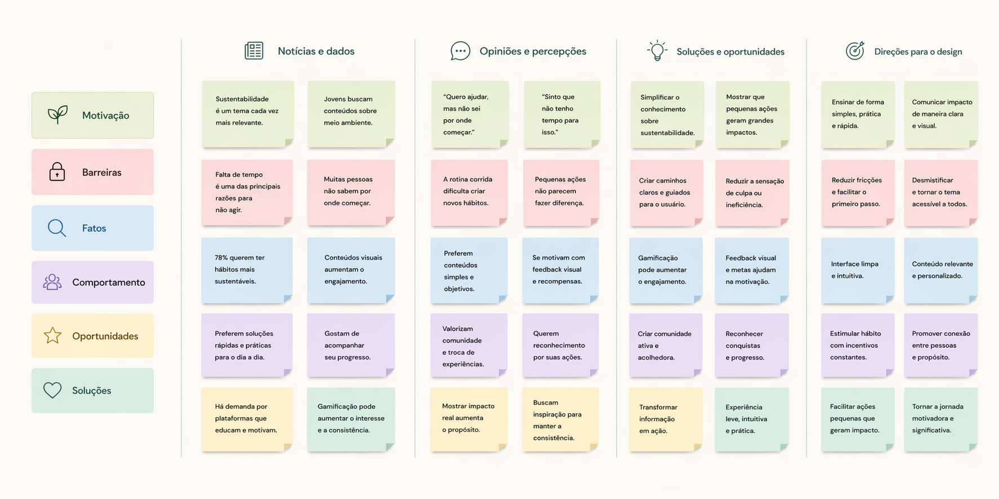
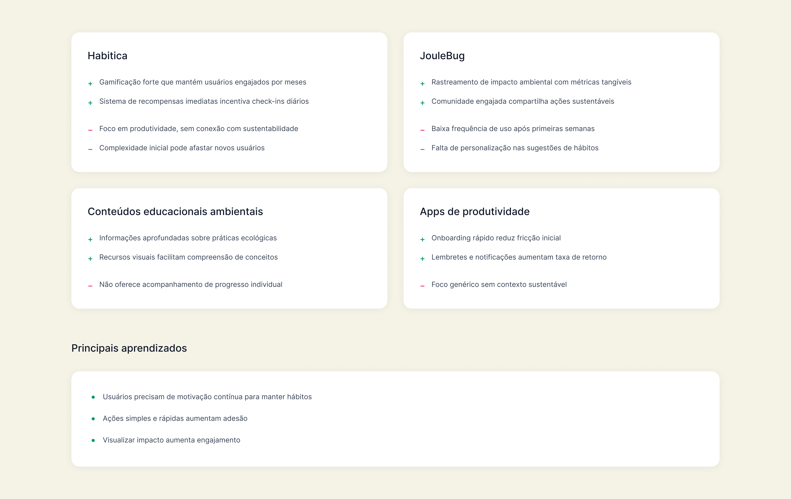
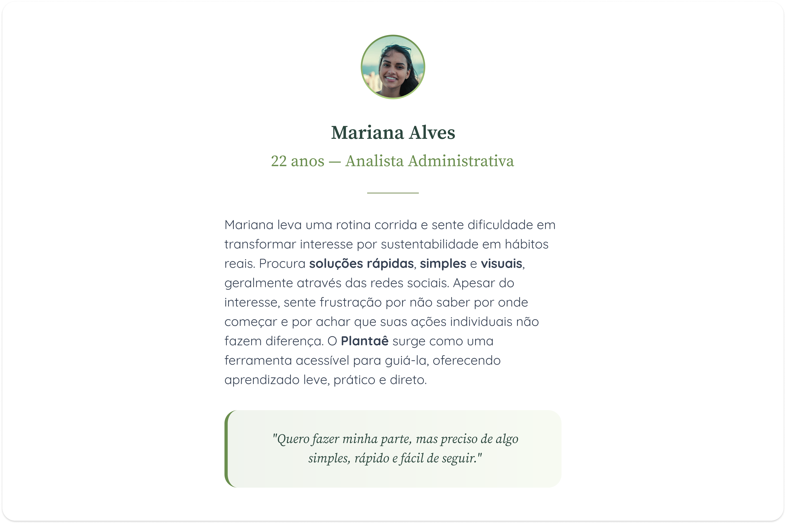
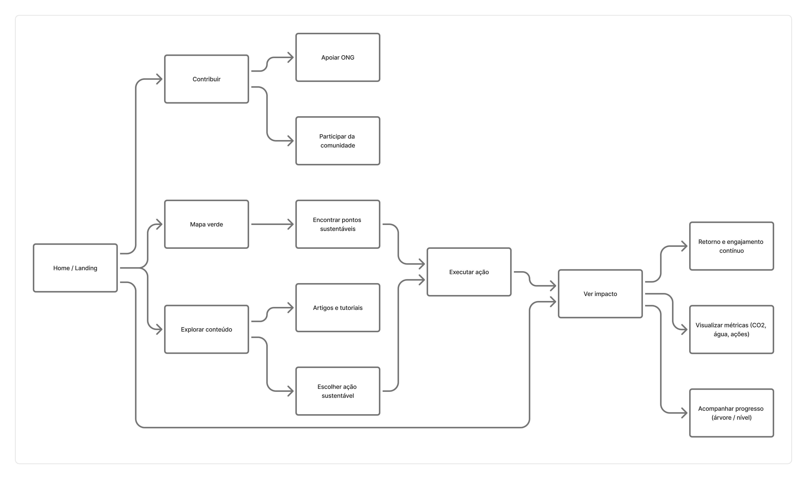
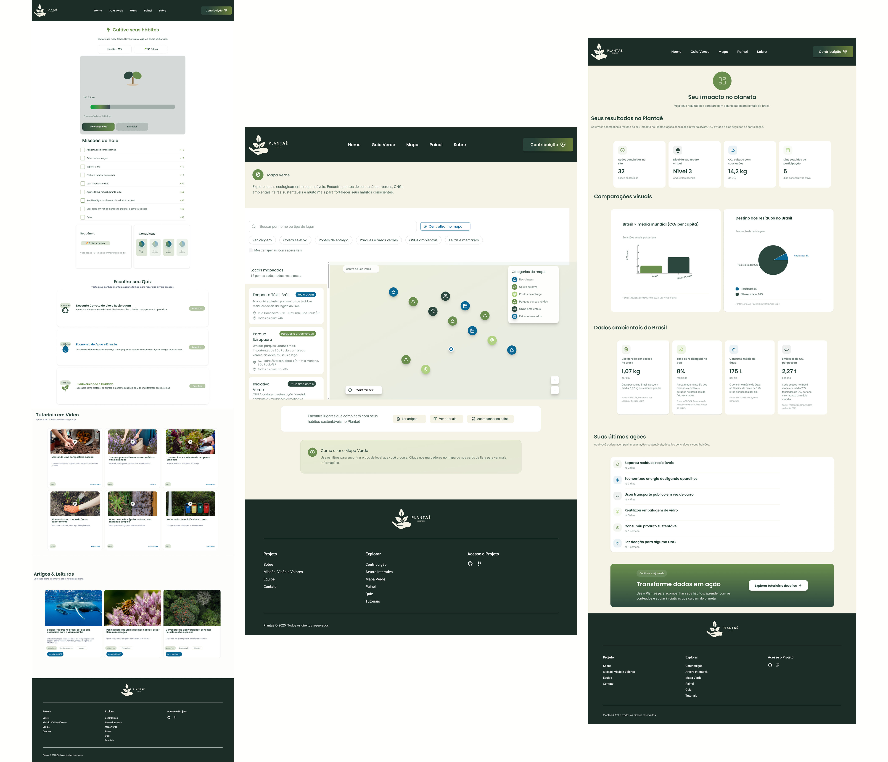

Muitas pessoas querem agir, mas não sabem por onde começar ou não enxergam o impacto real de suas atitudes.
O Plantaê traduz sustentabilidade em ações simples, acessíveis e visíveis.
Responsável pelo conceito, identidade visual, UI, fluxos de navegação e organização do projeto.
Protótipo navegável, telas principais e documentação de design.
Decisões baseadas em pesquisa secundária e análise de comportamento do usuário.

1. Usuários querem agir, mas não sabem por onde começar
2. Falta clareza sobre impacto individual
3. Gamificação aumenta engajamento
Analisamos iniciativas similares para identificar padrões de conteúdo, comunicação e formatos eficazes.


Estruturado para guiar da descoberta à ação, com foco em progressão e motivação contínua.

Interfaces focadas em clareza, hierarquia e experiência intuitiva.

Estrutura consistente de navegação e organização das informações ao longo do produto.

A ausência de validação com usuários reais foi o principal ponto fraco do projeto.
Pular wireframes acelerou o processo, mas reduziu a capacidade de testar e iterar soluções.